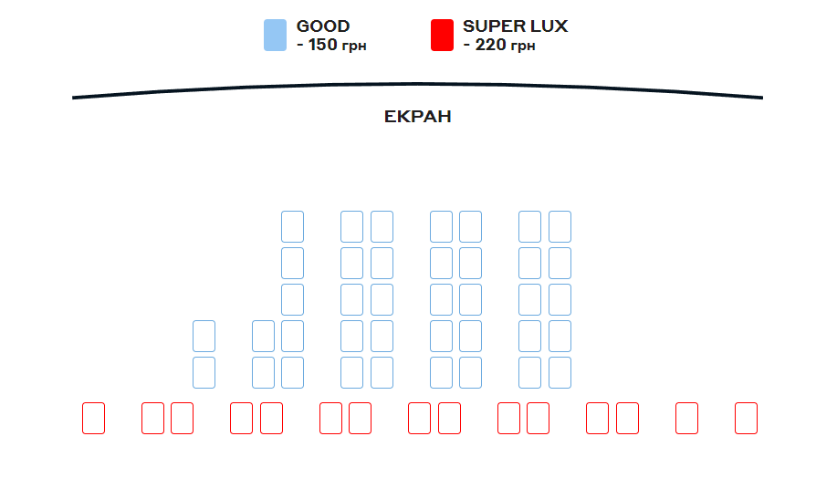

Жанр: трилер, драма
Режисер: Джуліан Ґілбі
Актори: Раян Філліпп, Ганна Нью, Фредді Торп
Тривалість: 115 хв.
Молодий англійський альпініст ступає на гірську стежку в Альпах, щоб допомогти своєму другові за одне літо підкорити «велику трійку»: Матергорн, Айгер і Монблан. Уже під час перших двох сходжень друзі стають свідками кривавих смертельних випадків, однак, не зважаючи на це, наполегливо розпочинають третє. Вони навіть не підозрюють, що на іншому боці гори саме в цей час назріває смертоносний шторм.
Вимушена поїхати зі своїм бойфрендом на Horror Hound festival, Лейн не відчуває радості. У міру наближення події дівчину починають мучити незрозумілі передчуття та тривожні видіння. У розпал фестивалю Лейн вже впевнена, що відбувається щось надприродне і що вона знаходиться в центрі всього цього.
Рейтинг: / 10
Третій фільм
Хелловін. Кінець
Жанр: трилер, жахи
Режисер: Девід Ґордон Ґрін
Актори: Джеймі Лі Кертіс, Вілл Паттон, Кайл Річардс
Тривалість: 111 хв.
Остання глава культового слешера про моторошного маніяка в масці Майкла Майєрса! Чи вдасться зупинити безжального вбивцю цього разу?
Рейтинг: / 10

Четвертий фільм
Аватар. Шлях води
Жанр: пригоди, фантастика, фентезі, екшн
Режисер: Джеймс Кемерон
Актори: Сем Вортінґтон, Зої Салдана, Кейт Вінслет
Тривалість: 162 хв.
Історія фільму «Аватар: Шлях води» розгортається більше ніж через десятиліття після подій першого фільму. Стрічка розповідає про сім’ю Саллі (Джейка, Нейтірі та їхніх дітей), проблеми, які їх переслідують, шлях, який вони долають, щоб захистити одне одного від небезпек, битви, які вони ведуть, щоб залишитися живими, і трагедії, які вони переживають разом.
 Гірська лихоманка
Гірська лихоманка Джиперс Кріперс: Відродженний
Джиперс Кріперс: Відродженний Хелловін. Кінець
Хелловін. Кінець Аватар. Шлях води
Аватар. Шлях води